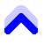

Una buena condición física y un buen calzado (¡nada de pies descalzos, chanclas, etc.!)
son absolutamente necesarios. El Salève es una auténtica montaña, un lugar donde hay que tener cuidado.
Lleve suficiente agua ya que no hay manantiales en los senderos del Salève.
Se recomiendan también un sombrero y protector solar, uno o dos bastones de senderismo (opcional), chaqueta cortavientos o impermeable, ropa abrigada en invierno y crampones si hay hielo, pasaporte, un poco de dinero y un picnic.
Nos reunimos a las 10:00h al terminal del autobús 8 en Veyrier-Douane ↗, a 100 metros de la frontera, en el lado suizo. Salida a pie desde el punto de encuentro. La(s) ruta(s) a seguir se acuerda(n) el mismo día, dependiendo del número de guías voluntarios presentes y de las capacidades de los participantes (más información aquí en francés). Contar entre 4 y 6 horas de marcha, de las cuales entre 2 y 3 horas de subida con unos 850 m de desnivel. Posibilidad de bajar en teleférico.↗
En ocasiones, organizamos una excursión adicional el mismo día, con punto de encuentro diferente, para explorar el sur del Mont Salève. Estas excursiones suelen ser más largas y se realizan lejos del teleférico, solo aptas para excursionistas experimentados. Los detalles se confirman aquí con uno o dos días de antelación, dependiendo de las condiciones meteorológicas.